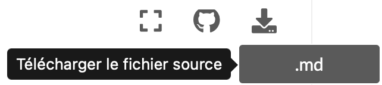

Markdown¶
Markdown est un langage de balisage léger, avec une syntaxe
facile à lire
facile à écrire.
Un document balisé par Markdown peut être transformé en HTML ou en PDF. Les fichiers Markdown ont une extension .md.
Ce texte que vous êtes en train de lire est écrit en Markdown. Vous pouvez télécharger son fichier source avec le bouton Télécharger en haut à droite.

Emphase¶
Les caractères _ ou * sont utilisés pour entourer les mots à mettre en emphase.
Ce _mot_ est en *italique*.
Ce mot est en italique.
Les caractères __ ou ** sont utilisés pour mettre des mots en grande emphase.
Ce __mot__ est en **gras**.
Ce mot est en gras.
Espaces¶
Les espaces multiples ou un simple retour à la ligne sont tous remplacés par une seule espace.
Des grands espaces
et
des
retours à la ligne.
Des grands espaces et des retours à la ligne.
Paragraphe¶
Une ligne vide crée un paragraphe.
Ceci est le premier paragraphe.
Ceci est le deuxième paragraphe.
Ceci est le premier paragraphe.
Ceci est le deuxième paragraphe.
Retour à la ligne¶
Ajouter deux espaces en fin de ligne insère un retour à la ligne forcé.
Les deux espaces en fin de cette ligne
forcent un retour à la ligne.
Les deux espaces en fin de cette ligne
forcent un retour à la ligne.
Commentaire¶
Vous pouvez utiliser des balises HTML pour insérer un commentaire. Le commentaire ne sera pas affiché dans la page web.
<!--- Ceci est un commentaire --->
Code¶
Le caractère ` (backquote) indique des éléments de code.
La fonction `print(x)` imprime la valeur de la variable `x`.
La fonction print(x) imprime la valeur de la variable x.
Insérer une formule¶
Le code suivant insère une formule mathématique en LaTeX.
$$
\frac{a + b}{1+x^2}
$$
Directives¶
Les directives permettent d’appliquer une fonction (directive) sur un bout de texte (contenu).
elle est entourée par des triples back-quotes
les options sont entourés par des deux-points
Voici le format d’une directive
```{directive}
:option: valeur
contenu
```
Paragraphe en évidence¶
Pour mettre un paragraphe en évidence, voici quelques directives:
note
tip
warning
Voici le code:
```{note}
Ceci est une directive **note**.
```
Voici trois exemples:
Note
Ceci est une directive note.
Astuce
Ceci est une directive tip.
Avertissement
Ceci est une directive warning.
Texte à côté¶
Le directive sidebar intègre un texte dans le côté droite du texte.
Les deux textes sont séparés par une barre verticale.
Attention:
Evitez cette directive si le document est destiné pour smartphone.
```{sidebar} Titre
Mon texte à côté.
```
Texte dans la marge¶
Le directive margin place un texte dans la marge.
Ce texte peut couvrir la barre de navigation à droite.
Attention:
Evitez cette directive si le document est destiné pour smartphone.
```{margin} Titre
Mon texte en marge.
```
Statistiques des notebooks¶
Le directive nb-exec-table affiche les statistiques des Jupyter notebooks.
```{nb-exec-table}
```
Document |
Modified |
Method |
Run Time (s) |
Status |
|---|
Inclure un document¶
Le directive literalinclude permet d’incure un fichier.
``` {literalinclude} hello.py
```
print('hello')
print('world')
L’option :lines: permet de specifier une plage de lignes.
Ici, le fichier est inclu à partir de la ligne 2.
``` {literalinclude} hello.py
:lines: 2-
```
print('world')
Télécharger un document¶
La commande {download} permet de télécharger un fichier.
{download}`hello.py <hello.py>`
Questions à choix multiples¶
Il est possible d’intégrer des questions à choix multiples au fil des pages via la directive question.
Dans le corps de la directive, les bonnes et mauvaises réponses sont indiquées via les rôles {v} et {f} pour vrai et faux.
```{question}
Combien y a t'il de bits dans un octet ?
Je pense qu'il y en a {f}`2`, {f}`4`, {v}`8` ou {f}`64`.
```
Il est possible de changer le titre affiché au-dessus de la question. Le contenu de la question peut lui-même être structuré en Markdown. Dans l’exemple ci-dessous, les réponses sont affichées dans une liste.
```{question} Question avec un titre personnalisé
Parmi les informaticiens et informaticiennes suivants, qui a reçu le prix Turing ?
* {v}`Barbara Liskov`
* {v}`Niklaus Wirth`
* {f}`Alan Turing`
* {v}`Tim Berners-Lee`
```
Blancs¶
Pour ajouter des blancs dans le texte, il suffit d’utiliser le rôle bl.
Dans le texte du rôle, les différentes options de réponses sont séparées par un caractère |.
Une réponse valable est précédée d’un caractère >.
Dans le texte suivant, certains sont laissés .
Dans le texte suivant, certains {bl}`>mots|trucs|machins` sont laissés {bl}`pour compte|>blancs|verts|seuls`.